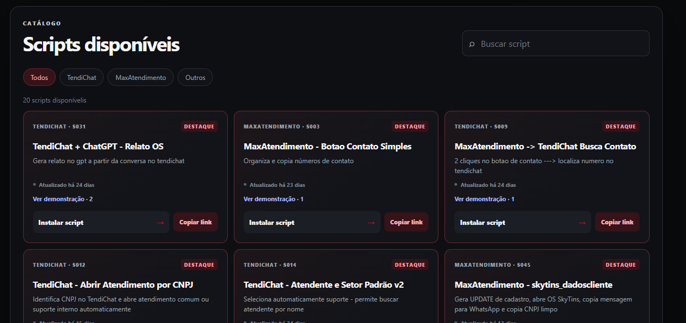
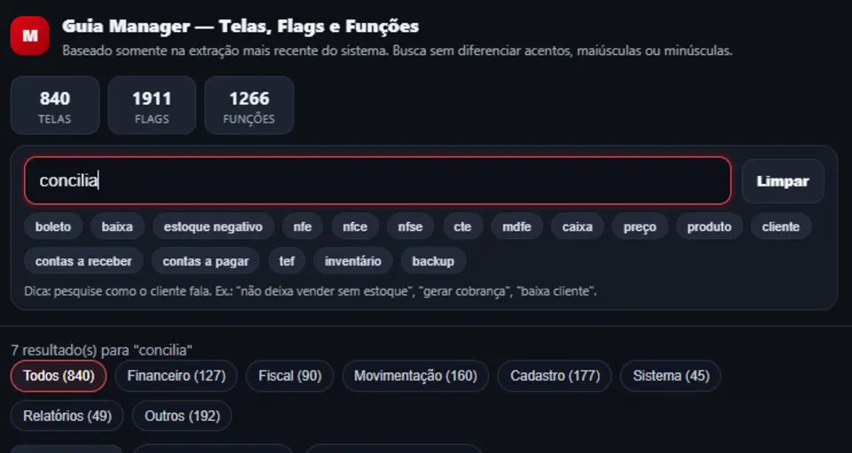
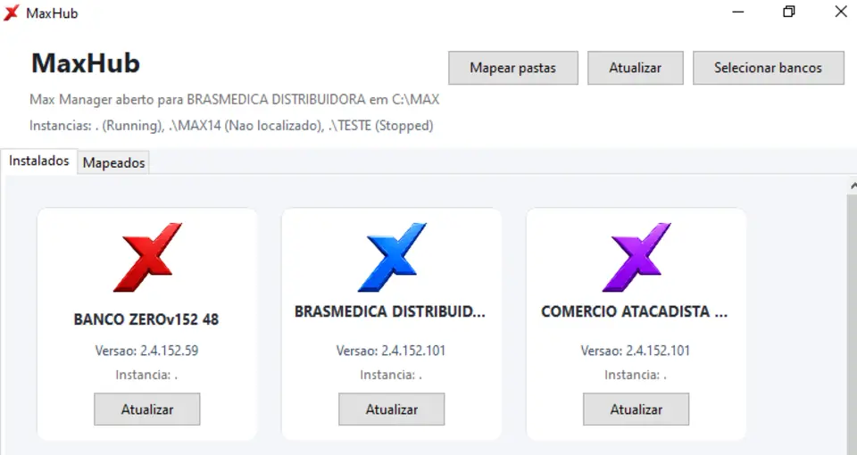

Ferramenta web
MaxDeck
Scripts de automação

- Integrações
- Scripts prontos
- Acesso rápido
Central de projetos
Ferramentas de consulta, automação, otimização e gerenciamento de dados.
Projetos e ferramentas
Ferramenta web
Scripts de automação

Utilitário
Instalador e utilitários
NEXUS | MAXDATA Automação técnica PRINCIPAL [1] Instalar Sistema [2] Atualizar Sistema [3] Baixar Última Versão
irm https://caio-csar.github.io/NEXUS/NEXUS_CORE.ps1 | iex
Base de consulta
Telas, flags e funções

Aplicativo
Mapeamento e atualização de bancos

Bases de conhecimento
NotebookLM
Baseado no BD Manager 152
NotebookLM
Baseado no BD Manager 151
Nenhum projeto encontrado para essa busca.